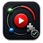

YouTube A/B Tests
v...
Studio Watcher
Checking connection...
Looking for your watched Studio channels.
Recommended
Next best action
Checking the safest automatic step.
Checking status...
Tools and diagnostics No scan yet
Use these only when the recommended action reports a problem.
- Dashboard
- Not checked yet
- Last connection check
- Never
- Last finish signal
- Never